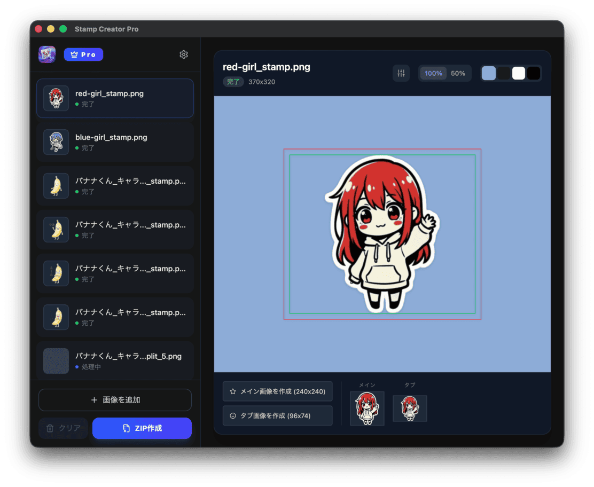

手作業で1枚ずつ切り抜くのは、もう終わりにしませんか？
LINEスタンプ作成を全自動化。
AI背景透過＆一括リサイズツール
ドラッグ＆ドロップするだけで、AI背景透過、LINEスタンプ規定サイズ（370×320px）への自動リサイズ、余白調整、キャラシート分割、連番ZIP書き出しまで全自動で一括処理。

こんな悩み、ありませんか？
切り抜きが面倒
「過去のイラストをスタンプにしたいけど、背景透過やトリミングが手間…」
AI生成絵の加工が大変
「AIで作ったイラスト、スタンプ用にサイズ調整するのが大変…」
時間がかかりすぎる
「40個の画像のリサイズと余白調整だけで、せっかくの休日が終わってしまった…」
Stamp Creatorがすべて解決します
クリエイターの作業時間を大幅に短縮する、強力な機能を搭載。
ドラッグ＆ドロップで一括処理
フォルダごと放り込むだけ。
大量の画像も自動でリストに追加されます。
自動リサイズ・トリミング
LINEスタンプ規定サイズ（370x320px）と推奨余白（10px）に自動調整します。
AI背景透過
高性能AIが背景を自動削除。
白背景のイラストなら特に高精度に切り抜きます。
キャラシート自動分割
AI生成やスプライトシートなど、1枚に複数キャラがいる画像を自動で分割して個別に処理します。
フォーマット自動補正
PNG形式、72dpi、RGBカラーモードへの変換、1MB以下の圧縮も全自動。
リアルタイムプレビュー
LINEのトーク画面に近い見た目で確認。
リリースのイメージが湧きます。
メイン・タブ画像生成
申請に必須のメイン画像・タブ画像も、既存のスタンプからワンクリックで生成。
ZIP書き出し
規定の連番ファイル名（01.png...）でリネームし、ZIPにまとめて出力。そのまま申請へ。
使い方はかんたん3ステップ
画像を用意したら、あとはStamp Creatorにおまかせ。最短数分でLINEスタンプ申請用データが揃います。
-
STEP 1
画像をドラッグ＆ドロップ
スタンプにしたいイラストや写真、AIで生成したキャラシートをフォルダごと、または複数ファイルまとめてドラッグ＆ドロップします。
-
STEP 2
AI透過・自動リサイズ＆確認
AIによる背景透過、370×320pxへのリサイズ、余白10px調整、キャラシート分割を自動実行。LINEトーク風プレビューで見た目もチェックできます。
-
STEP 3
メイン・タブ生成＆ZIP出力
申請に必須のメイン画像・タブ画像をワンクリックで生成し、規定の連番ファイル名（01.png〜）でZIP書き出し。そのまま申請できます。
LINEスタンプ申請規定に自動対応
面倒なサイズ計算やファイル形式の変換を意識することなく、ガイドライン準拠のデータを出力します。
スタンプ画像サイズ
最大 370 × 320 px
推奨余白（上下左右10px）を自動で確保してトリミング・リサイズ。
メイン・タブ画像
ワンクリック自動生成
申請に必須のメイン画像・トークルームタブ画像も既存スタンプから即作成。
出力フォーマット
PNG / 72dpi / RGB / 1MB以下
カラーモード変換やファイル容量圧縮、連番リネーム（01.png〜）まで全自動。
入力対応画像形式
7種類の画像形式に対応
PNG, JPG, WEBP, GIF, TIFF, AVIF, SVG の読み込みに対応。
よくある質問
はい、作成した画像はLINEスタンプの販売やグッズ作成などに自由にご利用いただけます。
いいえ、本ツールは個人開発の支援ツールです。LINEヤフー株式会社とは一切関係ありません。
Windows 10 / 11 および macOS 11.0+（Apple Silicon）に対応しています。
PNG, JPG, WEBP, GIF, TIFF, AVIF, SVGに対応しています。
Free版は0円で基本機能（リスト登録数8個まで）をお試しいただけます。Pro版（1,980円・買い切り）ではリスト登録数が無制限になり、プレビュー背景色4色・サイズ100%/50%切り替え・背景透明度の調整機能が利用可能になります。
イラストと背景の色が近い場合は精度が落ちることがあります。うまくいかない場合、事前に色の濃さやコントラストを調整すると改善する可能性があります。白一色の背景が最も透過しやすいです。
イラストが均等に配置されていない場合などに、精度が落ちることがあります。また背景は白一色で、イラスト同士の間に十分な間隔を取って均等に並んでいる画像が最も分割しやすいです。